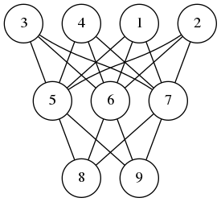
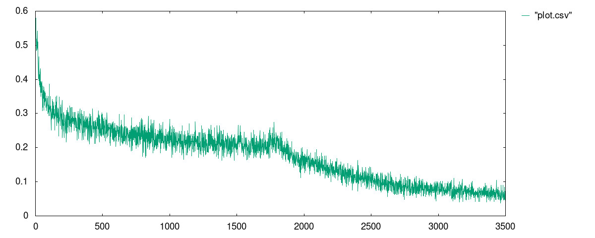

Today’s post is about something (trivial) I realized a few days ago: one can reconceptualize feed-forward and back-propagation operations in a neural network as instances of left-fold and right-fold operations. Most of this post will be theoretical, and at the end, I will write some code in scala.
A neural network is composed of perceptrons connected via a computation graph.

A perceptron on the other hand is a computation unit which takes a vector \(\mathbf{x}\) as an input and produces a scalar output
\[ f(\mathbf{w}\cdot\mathbf{x} + b) \]
Here \(f\) is a function of type signature \(f\colon\mathbb{R}\to \mathbb{R}\) and \(\mathbf{w}\) and \(b\) are parameters of the underlying perceptron.
In the simplest version of the neural networks, the network consists of layers of perceptrons where input propagates from one layer to the next. Then depending on the error produced, we back-propagate the error adjusting the weights of the perceptrons to produce the correct output. I wrote about perceptrons and back-propagation before (2018-05-18-online_regression.html), here and here
The observation I made is this feed-forward is a left fold, while back-propagation is a right-fold operation. In pseudo-code we can express these operations as follows:
FeedForward(xs,nss)
Input: a vector xs, and a list of layers nss where
a layer is an ordered list of perceptron and each
perceptron is a quintuple (w,b,f,eta,ys) where w is a
vector, b is a real number, f is and activation function,
eta is the learning rate of the perceptron and zs is the
last input processed by the node.
Output: a vector ys
Begin
If nss is empty
Return xs
Else
Let ns <- head of nss
Let ys <- ()
For each node=(w,f,b,zs) in ns
Update zs <- xs
Append f(<w,xs> + b) to ys
End
Call FeedForward(ys, tail of nss)
End
End
BackPropagations(ds,nss)
Input: a vector of errors, and a list of layers as before.
Output: a vector
Begin
If nss is empty
Return ds
Else
Let ns <- tail of nss
Let zsum <- 0
For each ((w,b,f,eta,xs),d) in (ns,ds)
Let zs <- (eta * d / f'(<w,xs> + b)) * xs
Update w <- w - zs
Update zsum <- zsum + zs
End
Call BackPropagation(zsum, all but the last element of nss)
End
EndYou can download the code and run it from my github repository. I am using mill instead of sbt.
The feed-forward part of the algorithm is easy to implement in the
functional style, i.e. no mutable persistent state, such that the
network as a computation unit is referentially transparent. However, the
back-propagation phase requires that we update the weights of each
perceptron. This means we must capture the whole state of the neural
network in a data structure and propagate it along each step. As much as
I like functional style and referential transparency, it is easier and
cleaner to implement neural networks with mutable persistent state.
Hence the choices of vars below.
package perceptron
import breeze.linalg._
object neural {
case class node(size: Int, fn: Double=>Double, eta: Double) {
private var input = DenseVector.rand[Double](size+1)
private var calc = 0.0
var weights = DenseVector.rand[Double](size+1)
def forward(x: Array[Double]): Double = {
input = DenseVector(Array(1.0) ++ x)
calc = fn(weights.dot(input))
calc
}
def backprop(delta: Double): DenseVector[Double] = {
val ider = eta/(fn(calc + eta/2) - fn(calc - eta/2) + eta*Math.random)
val res = (-delta*eta*ider)*input
weights += res
res
}
}
case class layer(size: Int, num: Int, fn: Double=>Double, eta: Double) {
val nodes = (1 to num).map(i=>node(size,fn,eta)).toArray
def forward(xs: Array[Double]) = nodes.map(_.forward(xs))
def backprop(ds: Array[Double]) = {
val zero = DenseVector.zeros[Double](nodes(0).size+1)
(nodes,ds).zipped
.foldRight(zero)({ case((n,d),v) => v + n.backprop(d) })
.toArray
}
}
case class network(shape:Array[(Int, Int, Double=>Double, Double)]) {
val layers = shape.map({ case (n,m,fn,eta) => layer(n,m,fn,eta) })
def forward(xs:Array[Double]) = layers.foldLeft(xs)((ys,ns) => ns.forward(ys))
def backprop(ds:Array[Double]) = layers.foldRight(ds)((ns,ys) => ns.backprop(ys))
}
}
`The only additional external dependency is the breeze math and statistics package. As for the utility code that we need for training and testing a neural network model for a given dataset, we have
package perceptron
import perceptron.neural._
object Main {
import scala.util.Random.nextInt
import scala.io.Source.fromFile
def sigmoid(x:Double) = 1.0/(1.0 + math.exp(-x))
def relu(x:Double) = math.max(x,0.0)
def train(net:network,
xs: Array[Array[Double]],
ys: Array[Double],
epochs: Int,
batchSize: Int,
tol: Double):Array[Double] = {
val size = xs.length
var err = Array[Double]()
for(i <- 1 to epochs) {
val j = math.abs(nextInt)%size
val x = xs(j)
val d = net.forward(x)(0) - ys(j)
net.backprop(Array(d))
if(i % batchSize == 1)
err = Array(0.0) ++ err
if(math.abs(d)>tol)
err(0) += 1.0/batchSize
}
return(err.reverse)
}
def main(args: Array[String]) {
val file = fromFile(args(0))
val size = args(1).toInt
val eta = args(2).toDouble
val epochs = args(3).toInt
val batchSize = args(4).toInt
val tol = args(5).toDouble
val data = file.mkString
.split("\n")
.map(x=>x.split("\t").map(_.toDouble).reverse)
val ys = data.map(_.head)
val xs = data.map(_.tail)
val net = network(Array((size,4,relu,eta),(4,1,sigmoid,eta)))
val err = train(net, xs, ys, epochs, batchSize, tol)
err.foreach(x=>println("%4.3f".format(x)))
}
} I know that MNIST is the de facto standard, but it is PIA to load and process the data. Instead, I am going to use the sonar dataset from UCI
I ran the model with the following parameters:
mill perceptron.run data/sonar.csv 60 0.0125 1750000 500 0.3 In the code above, the neural network has two layers: 60 nodes on the input layer, 1 hidden layer with 4 nodes, and a single output node. The perceptrons on the input layer use RELU meanwhile the other layer uses the sigmoid function.
The best result I received is in the file data/plot.csv
whose plot is given below:
